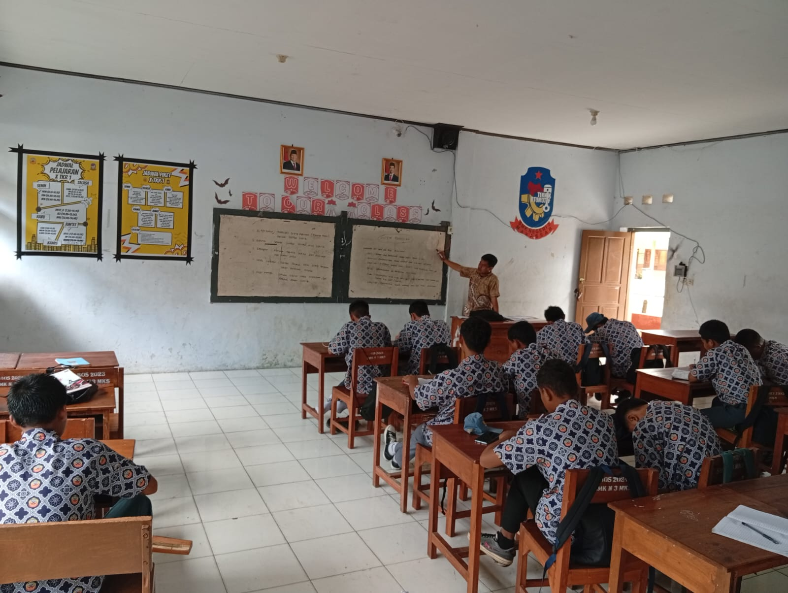
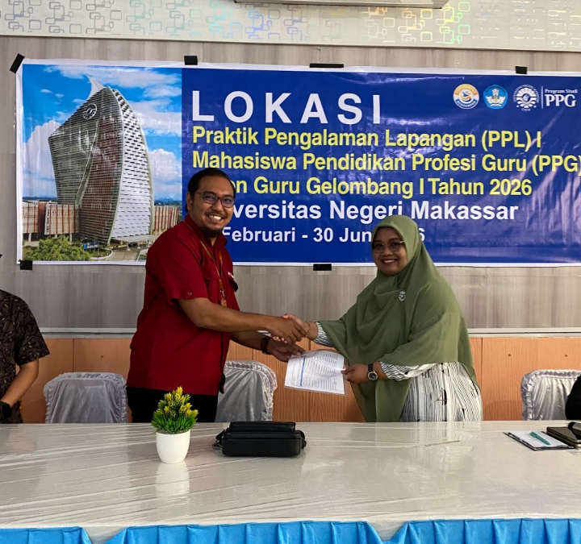

E-Portofolio PPG
Ricky Ridman Teknik Otomotif
E-Portofolio ini terbagi dalam dua bagian yaitu E-Portofolio 1 (Penugasan UTS) & E-Portofolio 2 (Penugasan UAS). E-Portfolio 1 bertujuan untuk memberikan refleksi awal sebagai fondasi dasar karakter mahasiswa yang terdiri dari beberapa komponen yaitu profil mahasiswa, analisis artefak, instrumen penilaian, dan model guru yang dituju. Sedangkan E-Portofolio 2 bertujuan untuk merumuskan prinsip atau nilai seorang guru sebagai refleksi akhir dari PPL Terbimbing yang mencakup dua bagian yaitu refleksi akhir dan filosofi mengajar.

Profil Mahasiswa
Ricky Ridman, S.Pd.
Kontak:
rickyridman.pto04@gmail.com +6282337086539Alamat:
Jalan Sungai Miu No.29 A Kelurahan Baru, Kota Palu, Kecamatan Palu Barat, Provinsi Sulawesi Tengah"Pendidikan otomotif sejati adalah proses mengubah 'bahan bakar' rasa ingin tahu menjadi 'tenaga' inovasi. Tanpa percikan minat, mesin kecerdasan sehebat apapun hanya akan menjadi logam yang dingin dan diam."
Data Diri Akademik
Nomor Induk Mahasiswa
2590074950850
LPTK PPG
Universitas Negeri Makassar
Bidang Studi
Teknik Otomotif
Lokasi PPL Terbimbing
SMK Negeri 3 Makassar
Dosen Pendamping Lapangan
Ir. Wabdillah, S.Pd., M.Pd.
Guru Pamong
Imran Madjid, S.Pd., M.Si., M.Pd.
Asal & Keunikan Daerah
Perkenalkan saya berasal dari kota palu, ibu kota Provinsi Sulawesi Tengah. Memiliki latar belakang Sejarah dan karakteristik geografis yang sangat unik dibandingkan kota-kota lain di Indonesia. Kota palu memiliki daya tarik tersendiri, mulai dari bentang alamnya hingga fenomena geologi yang langka antara lain: Kota lima dimensi, Kota dengan curah hujan terendah di Indonesia, Dilalui garis khatulistiwa, Fenomena geologi sesar palu-koro dan memiliki warisan budaya suku kaili yang memiliki berbagai tradisi unik. Nilai-nilai kearifan lokal inilah yang turut membentuk karakter dan pandangan saya dalam melihat keberagaman murid di kelas.
Inspirasi & Tujuan Menjadi Guru Profesional
Selain karena background pendidikan saya adalah keguruan. Saya juga terinspirasi untuk menciptakan ruang kelas yang demokratis, di mana setiap murid merasa aman untuk berpendapat, bereksplorasi, dan menemukan potensi terbaik mereka tanpa rasa takut. Membantu murid untuk mengenali bakat mereka, terutama di bidang-bidang spesifik (seperti teknik atau kejuruan), agar mereka siap menghadapi dunia kerja atau pendidikan yang lebih tinggi.
Analisis Artefak Pembelajaran
Bagian ini memuat refleksi dan analisis mendalam terhadap produk pembelajaran (Perangkat Ajar, Media, atau Asesmen) yang telah disusun selama pelaksanaan PPL.
Analisis Perangkat Pembelajaran Siklus 1
1. Kaitan dengan Teori Pemahaman Peserta Didik
Konteks Teori: Konsep ini menekankan pentingnya pengenalan mendalam terhadap latar belakang, kesiapan kognitif, dan kondisi sosio-emosional siswa sebagai fondasi perancangan instruksional yang berpihak pada peserta didik.
Refleksi Penerapan: Dalam pelaksanaan pembelajaran, ditemukan dinamika kelas di mana beberapa siswa tampak kelelahan atau kurang fokus karena memiliki tanggung jawab eksternal, seperti harus membantu keluarga sepulang sekolah.
Dampak Pedagogis: Pemahaman terhadap kondisi riil ini menggeser paradigma mengajar menjadi lebih empatik. Alih-alih memaksakan penyampaian materi secara satu arah, pendekatan disesuaikan untuk menarik kembali fokus siswa tanpa menambah beban kognitif yang berlebihan. Hal ini dicapai melalui komunikasi persuasif dan memperbanyak aktivitas praktik yang melibatkan motorik sehingga siswa tetap terjaga dan terlibat aktif.
2. Kaitan dengan Teori Pembelajaran Mendalam (Deep Learning)
Konteks Teori: Pembelajaran Mendalam (Deep Learning) menuntut proses belajar yang Meaningful (bermakna), mendorong siswa untuk berpikir kritis, memecahkan masalah, dan mengaplikasikan pengetahuan pada konteks dunia nyata, bukan sekadar hafalan.
Refleksi Penerapan: Penerapan kerangka Understanding by Design (UbD) sangat membantu dalam menstrukturkan materi secara kohesif, misalnya dalam menyusun alur 6 pertemuan untuk materi Sistem AC atau merancang langkah pemecahan masalah sistem air conditioning di SMK Negeri 3 makassar. Tujuan akhir pemahaman sudah dikunci sejak awal (sebagai backward design).
Dampak Pedagogis: Siswa tidak hanya menghafal prinsip dasar termodinamika atau komponen sistem pengapian konvensional, tetapi diajak untuk mengurai fungsi dan kerusakannya dalam sebuah sistem utuh. Kasus ketidaksesuaian antara teori, aktivitas, dan asesmen dapat direduksi karena seluruh aktivitas difokuskan pada penalaran klinis yang relevan dengan kebutuhan industri.
3. Analisis Artefak Produk Rencana Pembelajaran
Teori atau Konsep Pedagogi yang Diadopsi: Menggunakan kerangka UbD yang dipadukan dengan pendekatan Deep Learning serta model pembelajaran berbasis masalah (PBL). Pendekatan ini memastikan setiap elemen materi terhubung langsung dengan simulasi praktik bengkel.
Kendala yang Terjadi: Tantangan utama adalah mempertahankan keterlibatan (engagement) siswa yang memiliki tingkat energi fluktuatif akibat kelelahan dari aktivitas di luar sekolah, serta memastikan pemerataan pemahaman saat membedah sistem otomotif yang kompleks.
Solusi dan Pembelajaran: Mentransformasi teori menjadi LKPD interaktif dan Jobsheet praktikum yang berpusat pada penemuan (inquiry). Bukti artefak tidak lagi hanya terpaku pada format tunggal, melainkan terbuka untuk berbagai bentuk dokumentasi tugas (baik dokumen tertulis maupun tautan daring) yang memudahkan siswa mengumpulkan hasil belajar mereka sesuai dengan kemampuan dan aksesibilitas masing-masing.
4. Kendala yang Terjadi dan Solusi Pedagogis (Problem-Solving)
Konteks Kendala
Dalam pelaksanaan praktik pembelajaran, kendala utama yang saya hadapi tidak berpusat pada penyampaian materi teknis otomotif, melainkan pada aspek kesiapan dan kondisi sosio-emosional peserta didik. Berdasarkan hasil observasi dan asesmen awal, saya menemukan dinamika kelas di mana beberapa siswa kerap terlihat kelelahan, kurang fokus, dan mengalami penurunan motivasi saat mengikuti pembelajaran di kelas. Setelah melakukan pendekatan personal, teridentifikasi bahwa kondisi ini dipicu oleh tanggung jawab eksternal siswa yang harus bekerja membantu keluarga sepulang sekolah.
Analisis Berdasarkan Teori
Merujuk pada konsep Pemahaman Peserta Didik, kendala ini menyadarkan saya bahwa rancangan pembelajaran tidak bisa berjalan kaku. Kelelahan fisik yang dialami siswa secara langsung menurunkan kapasitas memori kerja (working memory) mereka. Jika saya memaksakan metode pengajaran konvensional atau ceramah panjang, materi teknis yang kompleks (seperti prinsip kerja termodinamika atau sistem hidrolik) tidak akan bermakna dan hanya akan memicu kebosanan.
Tindakan dan Solusi Profesional
Menghadapi situasi ini, saya mengambil langkah strategis untuk menyesuaikan pendekatan fasilitasi tanpa menurunkan standar kompetensi industri yang harus dicapai:
Adaptasi Pendekatan Deep Learning: Saya merestrukturisasi alur belajar dengan mengurangi porsi teori teoretis di dalam kelas dan langsung mengalihkannya pada aktivitas berbasis penemuan (inquiry) di bengkel. Dengan memperbanyak porsi praktik dan aktivitas motorik melalui penggunaan Jobsheet terstruktur, siswa dipaksa untuk bergerak dan berdiskusi, yang secara efektif mengembalikan tingkat kewaspadaan dan fokus mereka.
Penerapan Asesmen yang Fleksibel: Menyadari keterbatasan waktu dan tenaga siswa di luar jam sekolah, saya memodifikasi format pengumpulan tugas dan portofolio. Saya memastikan sistem penerimaan tugas lebih fleksibel (mendukung unggahan format Word, PDF, hingga tautan dokumen daring). Hal ini mengurangi beban administratif operasional siswa sehingga mereka bisa lebih fokus pada substansi penyelesaian masalah.
Komunikasi Pesrsuasif dan Empatik: Saya memposisikan diri bukan sekadar sebagai instruktur teknis, melainkan sebagai fasilitator yang memahami kondisi mereka. Pendekatan ini membangun lingkungan belajar yang lebih aman (safe environment), di mana siswa merasa dihargai usahanya, sehingga motivasi intrinsik mereka kembali tumbuh.
Refleksi Diri
Kendala ini memberikan pelajaran berharga bahwa esensi dari problem-solving seorang guru kejuruan bukan hanya mumpuni mendiagnosis kerusakan mesin, tetapi juga kepekaan dalam mendiagnosis hambatan belajar siswa. Dengan mengintegrasikan empati ke dalam desain pembelajaran (UbD), saya mampu menciptakan pengalaman belajar yang tetap bermakna (meaningful) dan mengakomodasi realitas kehidupan peserta didik.
5. Diskusi Umpan Balik (Feedback)
Catatan: Diskusi ini merepresentasikan hasil observasi pasca-pelaksanaan siklus pembelajaran materi Sistem Pengapian.
| Pihak Observer / Pendidik | Catatan Umpan Balik & Refleksi | Rencana Tindak Lanjut |
|---|---|---|
| Guru Pamong (Imran Madjid, S.Pd., M.Si., M.Pd.) |
Mengapresiasi modifikasi strategi pengajaran untuk siswa yang mengalami hambatan belajar akibat kelelahan. Penerapan tutor sebaya sangat efektif menjaga ritme kerja kelompok. | Disarankan menambah ice breaking mekanikal singkat (misal: tantangan identifikasi alat) sebelum masuk ke Jobsheet utama. |
| Dosen Pembimbing Lapangan (DPL) (Ir. Wabdillah, S.Pd., M.Pd) |
Penggabungan Problem Based Learning dan aspek Mindful-Meaningful-Joyful tergambar jelas pada studi kasus di LKPD. Keberpihakan pada siswa sangat kuat. | Validasi pada rubrik observasi harus lebih spesifik. Aspek kolaborasi antarsiswa di bawah tekanan harus terukur sebagai komponen penilaian afektif. |
| Mahasiswa PPG (Ricky Ridman) |
Sepakat dengan masukan Guru Pamong dan DPL. Dinamika kelas yang fluktuatif menyadarkan bahwa manajemen kesiapan mental sama krusialnya dengan persiapan materi teknis. | Modul Ajar dan Jobsheet berikutnya akan direvisi dengan menyisipkan rubrik observasi keaktifan kolaborasi serta aktivitas transisi prakondisi bengkel. |
Analisis Perangkat Pembelajaran Siklus 2
1. Kaitan dengan Teori Pemahaman Peserta Didik
Konteks Teori: Konsep ini menekankan pentingnya pengenalan mendalam terhadap latar belakang, kesiapan kognitif, dan kondisi sosio-emosional siswa sebagai fondasi perancangan instruksional yang berpihak pada peserta didik.
Refleksi Penerapan: Saat sesi tatap muka berlangsung, terlihat jelas variasi fokus dan stamina siswa di kelas; beberapa anak tampak sangat lesu dan kesulitan berkonsentrasi karena memikul tanggung jawab membantu perekonomian keluarga selepas jam sekolah.
Dampak Pedagogis: Penemuan realitas sosial ini mengubah cara pandang saya dalam mengelola kelas. Dibandingkan memaksakan transfer materi teoretis satu arah yang monoton, rancangan aktivitas diubah agar dapat memulihkan perhatian mereka tanpa menguras kapasitas pikiran secara berlebihan. Solusi ini diterapkan lewat dialog yang persuasif serta peningkatan porsi aktivitas berbasis kinestetik (gerak motorik) agar siswa tetap terjaga dan antusias berpartisipasi.
2. Kaitan dengan Teori Pembelajaran Mendalam (Deep Learning)
Konteks Teori:Pembelajaran mendalam (Deep Learning) menuntut proses belajar yang bermakna (Meaningful), mendorong siswa untuk berpikir kritis, memecahkan masalah, dan mengaplikasikan pengetahuan pada konteks dunia nyata, bukan sekadar hafalan.
Refleksi Penerapan: Kerangka kerja Understanding by Design (UbD) diimplementasikan sebagai panduan dalam menyusun peta kompetensi secara terpadu, seperti pembagian alur 6 pertemuan untuk pendalaman materi Sistem AC di SMKN 3 Makassar. Target kompetensi akhir dikunci sejak awal perencanaan sebagai jangkar pembelajaran (backward design).
Dampak Pedagogis: Dampak positifnya, siswa tidak lagi sekadar menghafal definisi komponen seperti evaporator atau katup ekspansi secara terpisah. Mereka ditantang untuk menganalisis keterkaitan fungsi antar-komponen dalam siklus refrigerasi utuh serta melakukan penalaran klinis saat mendiagnosis kerusakan, sehingga celah ketidaksesuaian antara teori dan asesmen industri dapat dieliminasi.
3. Analisis Artefak Produk Rencana Pembelajaran
Teori atau Konsep Pedagogi yang Diadopsi: Mengintegrasikan prinsip UbD dengan strategi Deep Learning serta model Problem Based Learning (PBL). Kombinasi ini memastikan seluruh landasan teori bermuara langsung pada problem otentik yang biasa dijumpai di bengkel otomotif.
Kendala yang Terjadi: Hambatan utama yang muncul adalah fluktuasi energi psikologis siswa akibat kelelahan fisik dari aktivitas luar sekolah, serta tantangan dalam menyetarakan pemahaman konsep kelistrikan dan tekanan mekanis AC yang cukup rumit.
Solusi dan Pembelajaran: Menjabarkan konsep abstrak ke dalam lembar kerja interaktif (LKPD) dan panduan praktikum (Jobsheet) yang berbasis penemuan masalah (inquiry). Hasil pengerjaan tugas pun dibuat adaptif; siswa tidak dikunci pada satu bentuk laporan kerja, melainkan diberi kebebasan mengumpulkan portofolio dalam berbagai format digital melalui platform Google Drive sekolah demi mengakomodasi keterbatasan waktu mereka.
4. Kendala yang Terjadi dan Solusi Pedagogis (Problem-Solving)
Konteks Kendala
Tantangan terbesar dalam pelaksanaan pembelajaran ini bukan terletak pada penyampaian substansi teknis otomotif, melainkan pada pengelolaan faktor emosional dan kesiapan belajar anak. Melalui pendekatan individual dan asesmen awal non-kognitif, terungkap bahwa penurunan motivasi dan rasa kantuk beberapa siswa dipicu oleh beban kerja fisik membantu keluarga setelah pulang sekolah.
Analisis Berdasarkan Teori
Mengacu pada teori Pemahaman Peserta Didik, kelelahan fisik berdampak langsung pada penurunan performa memori kerja (working memory) siswa. Memaksa mereka mendengarkan ceramah teoretis yang panjang mengenai hukum termodinamika atau diagram sistem hidrolik hanya akan memicu kejenuhan akademis dan membuat pembelajaran kehilangan maknanya.
Tindakan dan Solusi Profesional
Menghadapi situasi ini, saya mengambil langkah strategis untuk menyesuaikan pendekatan fasilitasi tanpa menurunkan standar kompetensi industri yang harus dicapai:
Adaptasi Pendekatan Deep Learning: Saya merestrukturisasi manajemen kelas dengan memangkas durasi paparan teori di dalam ruangan dan langsung mengalihkan siswa ke area bengkel praktikum memakai Jobsheet terstruktur. Aktivitas fisik dan diskusi kelompok selama penanganan unit kendaraan efektif memulihkan kesigapan dan konsentrasi mereka.
Penerapan Asesmen yang Fleksibel: Menyadari sempitnya waktu luang siswa di rumah, saya memberikan kelonggaran dalam pengumpulan portofolio tugas (menerima berkas digital berupa Word, PDF, hingga tautan dokumen daring). Hal ini meminimalkan hambatan administratif sehingga siswa bisa fokus pada esensi pemecahan masalah.
Komunikasi Pesrsuasif dan Empatik: Saya menempatkan diri sebagai fasilitator yang ramah dan memahami kondisi personal mereka, sehingga tercipta lingkungan belajar yang aman (safe environment) yang mampu menumbuhkan kembali motivasi belajar intrinsik siswa.
Refleksi Diri
Pengalaman ini menegaskan bahwa tugas utama guru produktif tidak hanya mendiagnosis kerusakan mekanis kompresor AC, melainkan juga harus peka dalam mengidentifikasi hambatan mental dalam belajar. Melalui sentuhan empati pada kerangka UbD, esensi pembelajaran yang bermakna tetap dapat tersampaikan di tengah keterbatasan realitas hidup siswa.
5. Diskusi Umpan Balik (Feedback)
Catatan: Diskusi ini merepresentasikan hasil observasi pasca-pelaksanaan siklus pembelajaran materi Sistem Pengapian.
| Pihak Observer / Pendidik | Catatan Umpan Balik & Refleksi | Rencana Tindak Lanjut |
|---|---|---|
| Guru Pamong (Imran Madjid, S.Pd., M.Si., M.Pd.) |
Langkah memindahkan fokus belajar dari kelas ke aktivitas bengkel menggunakan Jobsheet pemeriksaan sangat tepat dilakukan. Ini merupakan solusi nyata untuk mengatasi rasa kantuk dan memulihkan fokus siswa yang kelelahan karena harus bekerja paruh waktu membantu keluarga selepas sekolah. | Untuk menyiasati ketimpangan energi antar-siswa, optimalkan strategi pendampingan kelompok melalui metode Tutor Sebaya. Cobalah pasangkan siswa yang memiliki hambatan belajar/kelelahan dengan siswa kategori pencapaian tinggi agar terjadi transfer pengetahuan dan kerja sama tim yang solid sesuai dengan SOP bengkel. |
| Dosen Pembimbing Lapangan (DPL) (Ir. Wabdillah, S.Pd., M.Pd) |
Penerapan Backward Design dari kerangka UbD sudah terlihat jelas, di mana Anda berhasil menyelaraskan tujuan akhir berupa penalaran klinis dengan bukti evaluasi portofolio yang fleksibel. Secara teori Deep Learning, kelonggaran format tugas digital ini menunjukkan keberpihakan yang kuat pada kondisi nyata siswa. | Kelonggaran tugas digital di Google Drive sudah sangat baik. Namun, untuk ke depannya, pastikan Anda juga memperkuat penilaian formatif langsung (on-the-spot assessment) menggunakan rubrik observasi singkat saat praktikum berlangsung. Tujuannya agar konfirmasi keterampilan siswa saat mengoperasikan alat seperti manifold gauge atau vacuum pump bisa divalidasi dan diarahkan seketika di bengkel tanpa harus menunggu tugas portofolio terkumpul. |
| Mahasiswa PPG (Ricky Ridman) |
Saya sepenuhnya setuju dengan evaluasi dari Guru Pamong dan DPL. Dinamika kelas yang fluktuatif menyadarkan saya bahwa mengelola kesiapan mental dan emosional siswa di bengkel otomotif sama krusialnya dengan penguasaan materi teknis kelistrikan maupun sistem refrigerasi itu sendiri. | Pada siklus pembelajaran berikutnya, saya akan merevisi Modul Ajar dan Jobsheet dengan menyisipkan metode Tutor Sebaya untuk menyeimbangkan dinamika kelompok. Saya juga akan mengintegrasikan lembar observasi penilaian formatif langsung di area kerja serta merancang aktivitas ice breaking mekanikal singkat sebagai pengkondisian awal fokus siswa sebelum praktik dimulai. |
Analisis Perangkat Pembelajaran Siklus 3
1. Kaitan dengan Teori Pemahaman Peserta Didik
Konteks Teori: Konsep ini menekankan pentingnya pengenalan mendalam terhadap latar belakang, kesiapan kognitif, dan kondisi sosio-emosional siswa sebagai fondasi perancangan instruksional yang berpihak pada peserta didik.
Refleksi Penerapan: Melalui asesmen non-kognitif di awal pembelajaran, saya menggali informasi krusial terkait aktivitas peserta didik setelah pulang sekolah hingga tidur malam. Saat sesi tatap muka berlangsung, terlihat jelas variasi fokus dan stamina siswa di kelas beberapa anak tampak lesu dan kesulitan berkonsentrasi yang terindikasi karena memikul tanggung jawab membantu perekonomian keluarga selepas jam sekolah.
Dampak Pedagogis: Penemuan realitas sosial ini mengubah cara pandang saya dalam mengelola kelas. Dibandingkan memaksakan transfer materi teoretis satu arah yang monoton mengenai gelombang elektromagnetik dan kelistrikan, rancangan aktivitas diubah agar dapat memulihkan perhatian mereka. Solusi ini diterapkan lewat dialog yang persuasif, pembagian peran dalam kelompok (Joyful), serta peningkatan porsi aktivitas berbasis kinestetik (gerak motorik) melalui praktikum agar siswa tetap terjaga dan antusias berpartisipasi.
2. Kaitan dengan Teori Pembelajaran Mendalam (Deep Learning)
Konteks Teori:Pembelajaran mendalam (Deep Learning) menuntut proses belajar yang bermakna (Meaningful), mendorong siswa untuk berpikir kritis, memecahkan masalah, dan mengaplikasikan pengetahuan pada konteks dunia nyata, bukan sekadar hafalan.
Refleksi Penerapan: Modul ini secara eksplisit mengintegrasikan pendekatan Deep Learning (Mindful, Meaningful, Joyful). Target kompetensi akhir telah dikunci sejak awal melalui pertanyaan pemantik yang berorientasi pada industri, seperti memastikan sistem audio selalu prima dan transisi ke sistem digital modern.
Dampak Pedagogis: Dampak positifnya, siswa tidak lagi sekadar menghafal definisi komponen seperti Head Unit atau Power Amplifier secara terpisah. Melalui sintaks Problem Based Learning (PBL), mereka ditantang untuk menganalisis alur kerja sinyal audio dari antena hingga ke speaker serta melakukan penalaran klinis saat mendiagnosis keluhan "sistem audio mobil tiba-tiba mati total". Hal ini mengeliminasi celah ketidaksesuaian antara teori kelas dan situasi riil di bengkel.
3. Analisis Artefak Produk Rencana Pembelajaran
Teori atau Konsep Pedagogi yang Diadopsi: Mengintegrasikan pendekatan Deep Learning dengan model pembelajaran Problem Based Learning (PBL). Kombinasi ini memastikan seluruh landasan teori bermuara langsung pada problem otentik yang biasa dijumpai di bengkel otomotif.
Kendala yang Terjadi: Hambatan utama yang muncul adalah fluktuasi energi psikologis siswa akibat kelelahan fisik dari aktivitas luar sekolah, serta tantangan kognitif dalam menganalisis kesalahan sambungan (polaritas terbalik) pada wiring diagram sistem audio yang cukup rumit.
Solusi dan Pembelajaran: Menjabarkan konsep abstrak ke dalam lembar kerja interaktif (LKPD) dan panduan praktikum (Jobsheet) berbasis penemuan masalah. Hasil pengerjaan tugas dibuat adaptif; siswa diberi kebebasan mengumpulkan portofolio proyek dan laporan dalam berbagai format digital melalui platform Google Drive kelas demi mengakomodasi keterbatasan waktu mereka di rumah.
4. Kendala yang Terjadi dan Solusi Pedagogis (Problem-Solving)
Konteks Kendala
Tantangan terbesar dalam pelaksanaan pembelajaran ini bukan hanya pada penyampaian substansi teknis kelistrikan audio, melainkan pada pengelolaan faktor emosional peserta didik. Melalui asesmen awal, terungkap bahwa penurunan motivasi dan rasa kantuk beberapa siswa dipicu oleh beban kerja fisik di luar sekolah.
Analisis Berdasarkan Teori
Mengacu pada teori Pemahaman Peserta Didik, kelelahan fisik berdampak langsung pada penurunan performa memori kerja (working memory). Memaksa mereka mendengarkan ceramah teoretis yang panjang mengenai impedansi speaker atau sinyal output hanya akan memicu kejenuhan akademis.
Tindakan dan Solusi Profesional
Menghadapi situasi ini, saya mengambil langkah strategis:
Adaptasi Pendekatan Deep Learning: Saya memangkas durasi paparan teori di dalam kelas dan langsung mengalihkan siswa ke area praktik menggunakan Jobsheet Pemeriksaan Sistem Audio Video. Aktivitas fisik menggunakan alat ukur seperti multimeter untuk menguji kontinuitas kabel dan hambatan speaker efektif memulihkan kesigapan mereka.
Penerapan Asesmen yang Fleksibel: Menyadari sempitnya waktu siswa di rumah, pengumpulan LKPD dan laporan perbaikan difasilitasi sepenuhnya secara daring via tautan Google Drive. Ini meminimalkan beban administratif.
Komunikasi Pesrsuasif dan Empatik: Memposisikan diri sebagai fasilitator yang berkeliling memantau dengan memberikan pertanyaan arahan (probing) secara suportif, menciptakan suasana Joyful yang aman bagi siswa untuk berpendapat.
Refleksi Diri
Pengalaman ini menegaskan bahwa tugas utama pendidik vokasi tidak hanya mengajarkan cara memeriksa fuse atau konektor RCA, melainkan harus peka mengidentifikasi hambatan mental siswa. Empati adalah kunci agar esensi pembelajaran tetap bermakna.
5. Diskusi Umpan Balik (Feedback)
Catatan: Diskusi ini merepresentasikan hasil observasi pasca-pelaksanaan siklus pembelajaran materi Sistem Audio Video Kendaraan Ringan.
| Pihak Observer / Pendidik | Catatan Umpan Balik & Refleksi | Rencana Tindak Lanjut |
|---|---|---|
| Guru Pamong (Imran Madjid, S.Pd., M.Si., M.Pd.) |
Langkah memindahkan fokus dari kelas teoretis ke aktivitas praktikum menggunakan Jobsheet Pemeriksaan Sistem Audio sangat tepat. Ini solusi nyata mengatasi kantuk siswa yang kelelahan bekerja paruh waktu. | Untuk menyiasati ketimpangan pemahaman dan energi antar-siswa, optimalkan strategi Tutor Sebaya. Pasangkan siswa reguler/hambatan belajar dengan siswa pencapaian tinggi agar terjadi kolaborasi saat merangkai wiring audio. |
| Dosen Pembimbing Lapangan (DPL) (Ir. Wabdillah, S.Pd., M.Pd) |
Penyelarasan Problem Based Learning dengan evaluasi portofolio di Google Drive sudah sangat baik dan menunjukkan keberpihakan pada siswa. Secara teori Deep Learning, ini mengakomodasi beban mental mereka. | Perkuat penilaian formatif langsung (on-the-spot assessment) menggunakan rubrik observasi saat praktikum. Tujuannya agar konfirmasi keterampilan (misal: kalibrasi multimeter saat mengukur hambatan antena ) bisa divalidasi seketika tanpa menunggu tugas terkumpul. |
| Mahasiswa PPG (Ricky Ridman) |
Saya sepenuhnya setuju. Dinamika kelas menyadarkan saya bahwa mengelola kesiapan mental siswa di bengkel sama krusialnya dengan penguasaan analisis komponen head unit dan amplifier. | Pada siklus berikutnya, saya akan merevisi Modul Ajar dengan menyisipkan detail pembagian Tutor Sebaya. Saya juga akan mengintegrasikan lembar observasi on-the-spot dan memberikan ice breaking singkat sebelum praktik kelistrikan dimulai. |
A. Kendala Penyusunan
Heterogenitas Siswa: Kendala paling mendasar yang dihadapi adalah rumitnya melakukan pemetaan secara menyeluruh terhadap kesiapan dan karakteristik belajar anak. Pada kelas tempat PPL berlangsung, terdapat variasi yang sangat lebar terkait gaya belajar maupun kapasitas kognitif peserta didik.
Tantangan Diferensiasi: Walaupun asesmen diagnostik sudah dijalankan pada tahap awal, proses mengintegrasikan strategi pembelajaran berdiferensiasi baik pada aspek proses maupun konten ke dalam penyusunan Lembar Kerja Peserta Didik (LKPD) dan Modul Ajar terbukti cukup rumit.
Efisiensi Waktu: Mencari titik temu dalam meracik materi bagi siswa yang cepat tanggap (fast learner) dan yang lebih lambat (slow learner) membutuhkan usaha ekstra. Akibatnya, penyusunan skenario aktivitas dan instrumen belajar menghabiskan durasi yang jauh melebihi estimasi awal.
B. Adopsi Teori & Pedagogi
Landasan Filsafat: Seluruh perangkat pembelajaran yang disusun berpijak pada aliran filsafat Konstruktivisme. Hal ini kemudian diaplikasikan di dalam kelas dengan menggunakan model Problem-Based Learning (PBL).
Konsep Pedagogi: Terdapat pemahaman yang kuat bahwa peserta didik membentuk pemahamannya secara mandiri lewat pengalaman langsung dan pemecahan masalah, alih-alih hanya menjadi wadah pasif yang sekadar menerima informasi dari guru.
Penerapan pada Produk: Modul Ajar dan LKPD dibuka dengan penyajian masalah yang dekat dengan kehidupan nyata (kontekstual). Selanjutnya, LKPD difungsikan sebagai instrumen panduan investigasi mandiri dan diskusi, yang pada akhirnya menggeser peran guru dari sekadar penceramah menjadi seorang fasilitator pendamping.
C. Faktor Keberhasilan
Media Interaktif: Kunci utama kesuksesan pembelajaran ini terletak pada penggunaan sarana visual dan interaktif. Langkah ini sukses mendobrak kebiasaan pasif siswa yang sebelumnya terlalu sering dijejali dengan metode ceramah konvensional.
Peningkatan Atensi: Tingkat perhatian peserta didik meningkat secara signifikan sepanjang kegiatan belajar berkat diterapkannya elemen permainan (gamification) serta tayangan video animasi edukatif.
Konkretisasi Materi: Media pembelajaran yang digunakan berhasil membuat konsep-konsep abstrak menjadi lebih nyata dan mudah dipahami. Dampaknya, rasa penasaran siswa berhasil dibangkitkan mulai dari tahap apersepsi sampai kegiatan penutup.
D. Adaptasi Situasional
Modifikasi LKPD: Guna memfasilitasi kelas yang tingkat kesiapan kognitifnya belum optimal, instruksi di dalam LKPD diubah menjadi lebih terstruktur (langkah demi langkah). Bimbingan bertahap (scaffolding) juga diberikan dengan porsi yang cukup demi mencegah siswa merasa putus asa atau frustrasi.
Penyesuaian Bahan Bacaan: Pilihan kata atau diksi pada teks bacaan di dalam Modul Ajar perlu disederhanakan. Penyesuaian ini bertujuan agar teks tersebut selaras dengan kemampuan kebahasaan peserta didik saat ini sehingga lebih gampang dicerna.
Fleksibilitas Asesmen: Terdapat urgensi untuk menyesuaikan kembali rubrik asesmen formatif. Modifikasi ini dilakukan agar Kriteria Ketercapaian Tujuan Pembelajaran (KKTP) atau target kompetensi yang diharapkan bisa lebih realistis dan sejalan dengan kondisi awal kesiapan belajar anak.
Lampiran Penilaian PPL
Keterangan: Bagian ini berisi hasil penilaian otentik dari Guru Pamong terkait rancangan perangkat pembelajaran (Lampiran 7) dan praktik mengajar di kelas (Lampiran 8) yang telah dilaksanakan selama 3 siklus.
Lampiran 7
Instrumen Penilaian Perangkat Pembelajaran
Dokumen ini memuat nilai dan catatan dari Guru Pamong terhadap Modul Ajar/RPP, Media, LKPD, dan Instrumen Penilaian yang disusun pada siklus 1 hingga 3.
| Siklus | Materi | |
|---|---|---|
| Siklus 1 | Sistem Pengapian | |
| Siklus 2 | Sistem Air Conditioning | |
| Siklus 3 | Sistem Audio Vidio |
Lampiran 8
Instrumen Penilaian Praktik Mengajar
Dokumen ini berisi hasil evaluasi keterampilan mengajar (keterampilan membuka pelajaran, penguasaan materi, pengelolaan kelas) yang dinilai oleh Guru Pamong.
| Siklus | Fokus Keterampilan | Nilai |
|---|---|---|
| Siklus 1 | Pengelolaan Kelas | A (88) |
| Siklus 2 | Penggunaan Media | A (93) |
| Siklus 3 | Evaluasi Pembelajaran | A (96) |
Model Guru yang Dituju
Sebagai pendidik, saya berpegang teguh pada prinsip pendekatan humanis, perbaikan berkelanjutan melalui refleksi, dan keberanian untuk berinovasi. Berbekal pemahaman utuh atas empat kompetensi inti, seluruh dedikasi saya arahkan untuk menghadirkan pengalaman belajar yang memerdekakan murid, memupuk kebiasaan berpikir tingkat tinggi yang mendalam, serta membangun kerja sama lintas pihak yang bersinergi.
Misi Pribadi
- Merancang dan melaksanakan proses belajar yang berfokus pada kebutuhan murid, relevan dengan kehidupan, serta memberi kesempatan yang sama bagi seluruh murid untuk berkembang.
- Menciptakan suasana kelas yang aman, nyaman, dan memberi semangat belajar agar setiap murid betah mengikuti pembelajaran.
- Menggunakan metode yang lebih mendorong murid untuk terlibat langsung, bertanya, berdiskusi, dan mempraktikkan materi, bukan hanya mendegarkan guru menjelaskan.
Kompetensi Inti
- Pedagogik: Memahami prinsip-prinsip pembelajaran serta gaya belajar dan kebutuhan setiap murid yang berbeda-beda.
- Profesional:Terus menambah ilmu, wawasan dan keterampilan di bidang otomotif sesuai perkembangan industri dan teknologi otomotif terbaru, baik dari sistem konvensional sampai ke sistem EFI ataupun industri mobil listrik.
- Digital: Mampu membuat bahan ajar berbasis teknologi yang menarik dan melibatkan murid, seperti simulasi, kuis online maupun video pembelajaran.
Karakter Pendidik
- Reflektif: Terbiasa melakukan intropeksi setelah mengajar, lalu menjadikan kekurangan sebagai bahan untuk terus meningkatkan kualitas pembelajaran kedepan.
- Empati: Peka dan menghargai kondisi, budaya, serta masalah personal yang dihadapi murid, sehingga mendapat perlakuan dan tidak menghakimi.
- Inovatif: Terbuka terhadap perubahan dan tidak takut bereksperimen dengan strategi atau media pembelajaran terbaru yang sesuai kebutuhan murid dan industri.
Refleksi Akhir Individu & Filosofi Mengajar
Bagian ini berisi hasil evaluasi diri dan pandangan pendidikan saya yang akan saya terapkan saat praktik mengajar di PPL mandiri serta menjadi pedoman saya saat berprofesi sebagai guru nantinya.
Refleksi Pribadi
Melaksanakan Praktik Pengalaman Lapangan (PPL) Terbimbing di SMK Negeri 3 Makassar, khususnya pada program keahlian Teknik Kendaraan Ringan, menjadi titik balik transformatif yang krusial bagi perkembangan karir saya sebagai calon guru. Pengalaman nyata ini tidak sekadar menguji modal akademis yang saya miliki, tetapi juga mengasah kepekaan sosial, kemampuan beradaptasi, serta komitmen total demi kemajuan belajar peserta didik.
1. Capaian Pembelajaran Selama Tahapan PPL Terbimbing.
Sepanjang fase PPL Terbimbing, saya berhasil menyerap berbagai prinsip fundamental dalam merancang dan mengeksekusi pembelajaran yang relevan bagi siswa sekolah vokasi. Secara khusus, saya mendalami strategi mengemas materi teknis yang rumit lewat pendekatan Deep Learning (Pembelajaran Mendalam). Saat menyusun modul ajar dan mengelola kelas untuk materi Sistem Pengapian, Sistem AC, serta Sistem Audio Video, saya memahami bahwa kunci keberhasilan instruksional ada pada sinkronisasi antara teori, praktik di bengkel, dan metode asesmen. Selain itu, saya juga dilatih untuk melakukan analisis artefak rencana pembelajaran secara sistematis. Proses ini meliputi pencatatan kendala riil di lapangan serta evaluasi kritis terhadap teori pedagogi yang diterapkan. Pengalaman berharga lainnya adalah pemanfaatan teknologi, seperti penggunaan software simulasi sebelum siswa berhadapan dengan komponen fisik, serta penyusunan e-portofolio berbasis tautan dan berbagai format berkas yang fleksibel.
2. Tantangan di Lapangan dan Solusi yang Diterapkan.
Hambatan terbesar yang saya temui bukan terletak pada bobot materi otomotif, melainkan pada dinamika psikologis dan kondisi humanis para siswa. Di kelas, saya berhadapan dengan keberagaman latar belakang; cukup banyak siswa yang datang dalam keadaan lelah dan sulit berkonsentrasi karena harus bekerja membantu ekonomi keluarga selepas jam sekolah.
Solusi :
Menghadapi situasi tersebut, saya menggeser paradigma manajemen kelas dari seorang pengajar konvensional menjadi fasilitator yang mengedepankan empati. Saya menyiasatinya dengan menyesuaikan ritme pembelajaran agar lebih akomodatif tanpa memangkas standar kompetensi yang harus dicapai. Saya menerapkan model Problem-Based Learning (PBL) yang menghubungkan kerusakan teknis kendaraan dengan kasus nyata di bengkel. Strategi ini terbukti ampuh mendongkrak motivasi belajar mereka, karena materi terasa lebih aplikatif dan siswa diberi ruang untuk aktif berdiskusi ketimbang sekadar menyimak ceramah teori yang panjang.
3. Apakah Umpan Balik dan Saran Konstruktif untuk PPL Mandiri.
Melalui forum diskusi refleksi akhir bersama dosen pembimbing dan guru pamong, saya menerima beberapa rekomendasi strategis sebagai bahan evaluasi menyongsong tahapan PPL Mandiri:
a. Optimasi Manajemen Waktu dalam PBL: Saya diarahkan untuk lebih presisi dalam membagi alokasi waktu. Mengingat sintaks dalam Problem-Based Learning terutama tahap investigasi kelompok kerap memakan durasi yang panjang, saya perlu merancang timeline kerja praktik yang lebih ketat agar seluruh fase pembelajaran selesai sesuai jadwal.
b. Aplikasi Asesmen Berdiferensiasi: Menimbang variasi kesiapan belajar dan stamina siswa (terutama mereka yang bekerja), saya disarankan untuk mematangkan instrumen penilaian yang berdiferensiasi. Hal ini penting agar evaluasi capaian praktik tidak kaku, melainkan mampu mengukur perkembangan kompetensi tiap individu secara adil.
c. Otonomi Manajemen Kelas dan Bengkel: Memasuki fase PPL Mandiri, saya dituntut untuk lebih berani mengambil kendali penuh dalam mengondisikan ketertiban workshop. Saya harus mandiri tanpa terus bersandar pada arahan guru pamong, termasuk dalam menegakkan disiplin Keselamatan dan Kesehatan Kerja (K3) saat siswa melakukan penanganan pada ketiga sistem kendaraan.
Filosofi Mengajar
Mengintegrasikan Empati dan Pembelajaran Bermakna demi Membangun Kompetensi
Prinsip mendidik yang saya pegang teguh berlandaskan pada keyakinan bahwa pendidikan vokasi, pada hakikatnya, adalah upaya untuk "memanusiakan manusia" sebelum membentuk mereka menjadi tenaga kerja siap pakai yang terampil. Melalui rangkaian pengalaman dari fase observasi, asistensi, hingga praktik pembelajaran terbimbing, saya memahami betul bahwa setiap siswa membawa latar belakang kehidupan yang tidak sederhana ke dalam ruang kelas. Menghadapi realitas di mana banyak siswa datang dalam kondisi lelah secara fisik maupun mental akibat tuntutan menopang ekonomi keluarga, mengonstruksi prinsip fundamental dalam diri saya: guru bukan sekadar penyampai materi teknis, melainkan seorang fasilitator yang penuh empati. Mengacu pada teori pendidikan humanistik Carl Rogers mengenai pentingnya penerimaan tanpa syarat (unconditional positive regard), saya meyakini bahwa menciptakan atmosfer belajar yang aman secara emosional dan penuh pengertian adalah syarat mutlak. Siswa perlu merasa diakui dan dipahami terlebih dahulu, agar tumbuh motivasi internal dalam diri mereka untuk menguasai materi teknis yang kompleks.
Secara pedagogis, orientasi mengajar saya digerakkan oleh konsep Pembelajaran Mendalam (Deep Learning) yang berbasis pada pemecahan masalah. Dalam mentransfer kompetensi keahlian Teknik Kendaraan Ringan khususnya pada Sistem Pengapian, Sistem AC, dan Sistem Audio Video saya mengadopsi paradigma konstruktivisme sosial dari Lev Vygotsky. Saya percaya bahwa penguasaan materi yang substansial tidak dicapai lewat hafalan nama komponen, melainkan dibangun secara mandiri oleh siswa saat mereka berinteraksi langsung dengan situasi nyata. Oleh karena itu, implementasi model Problem-Based Learning (PBL) menjadi fondasi utama dalam manajemen kelas saya. Dengan menyajikan problem autentik pada sistem kendaraan, siswa dipicu untuk berpikir kritis, bekerja sama dalam tim, dan merumuskan solusi yang sesuai dengan standar dunia industri. Pendekatan ini terbukti efektif dalam menjembatani jarak antara teori akademis dan realitas praktis di lapangan.
Pada akhirnya, esensi utama yang mengintegrasikan seluruh aktivitas instruksional saya adalah kemampuan beradaptasi dan komitmen pada refleksi yang berkelanjutan. Menjadi seorang pendidik profesional berarti bersedia menjadi pembelajar sepanjang hayat, yang senantiasa mencatat setiap hambatan di lapangan sebagai bahan evaluasi kritis atas strategi yang telah diterapkan. Bagi saya, mendidik siswa SMK bukan sekadar mentransfer keterampilan mekanis, melainkan menumbuhkan daya lenting (resilience) serta ketajaman berpikir dalam mengatasi masalah. Komitmen filosofis ini yang memadukan pendekatan humanis berbasis empati, analisis problem yang tajam, dan evaluasi diri yang konsisten akan selalu menjadi kompas moral serta ideologis saya dalam menjalani peran sebagai guru yang memberi dampak nyata bagi masa depan peserta didik.
Dokumentasi Kegiatan PPL
Bagian ini berisi dokumentasi berupa foto kegiatan saya selama mengikuti program Praktik Pengalaman Lapangan (PPL).

Pertemuan Pertama Bersama Guru Pamong
[Kegiatan saat awal mula bertemu langsung bersama Guru Pamong di Sekolah, tepatnya di SMK Negeri 3 Makassar.]

Penyerahan Mahasiswa PPL Terbimbing secara Simbolis
[Penyerahan secara simbolis dari pihak LPTK yang di laksanakan oleh Dosen Pembimbing Lapangan dan diterima langsung oleh Kepala Sekolah.]

Foto Bersama Penerimaan Mahasiswa PPL Terbimbing
[Foto bersama kegiatan orientasi bersama kepala sekolah, dosen pembimbing lapangan dan guru pamong dan beberapa wakasek.]

Wawancara dengan Wakasek Kurikulum
[Wawancara langsung Wakasek Kurikulum dan Pengenalan lingkungan sekolah serta budaya akademik.]

Praktik Pengalaman Lapangan
[Praktik mengajar secara langsung di Lab. Teknik Kendaraan Ringan Otomotif.]

Asistensi Mengajar
[Kegiatan Asistensi Mengajar sekaligus membantu guru pamong dalam mengajar, menyusun perangkat, media, mendampingi siswa, atau memeriksa tugas.]

Konsultasi Bersama DPL
[Bimbingan dan Konsultasi langsung kepada Dosen Pembimbing Lapangan.]

Penutup & Penarikan
[Tulis deskripsi momen perpisahan, penyerahan kembali mahasiswa oleh sekolah mitra ke pihak kampus/LPTK.]